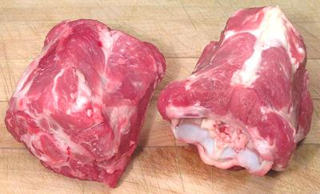

Lamb Necks

Lamb Necks are useful for stews and the like. The meat is fairly dark and
flavorful, and there is little fat. The photo specimens were
4 inches long, 2-1/2 inches high and 3 inches across and weighed 1 pound
each. Each of these chunks contained two neck bones.
Keep in mind, if using an English recipe that uses the traditional
English lamb cuts "neck" means something quite different. See the
English Lamb Chart.
More on Lamb / Mutton Cuts.
Buying:
These can be found in markets serving communities
from countries that use a lot of lamb: Turkey, Armenia, Middle East, North
Africa, Pakistan, etc.
Cooking:
Neck meat is well exercised so it's both
flavorful and tough. Given the complexity of the bones the practical
method for recovering this meat is to simmer for two hours, after which
it can be easily removed from the bones with a fork.
Yield:
A one pound neck piece (two bones) will yield
about 10 ounces of meat (63%). Of course to fully recover this meat, the
neck pieces need to be simmered about 2 hours so the meat can be pulled
off cleanly. After simmering the cooked meat will weigh abotut 5-1/2
ounces (34%).
as_neckz 091015 - www.clovegarden.com
©Andrew Grygus - agryg@clovegarden.com - Photos
on this page not otherwise credited © cg1
- Linking to and non-commercial use of this page permitted